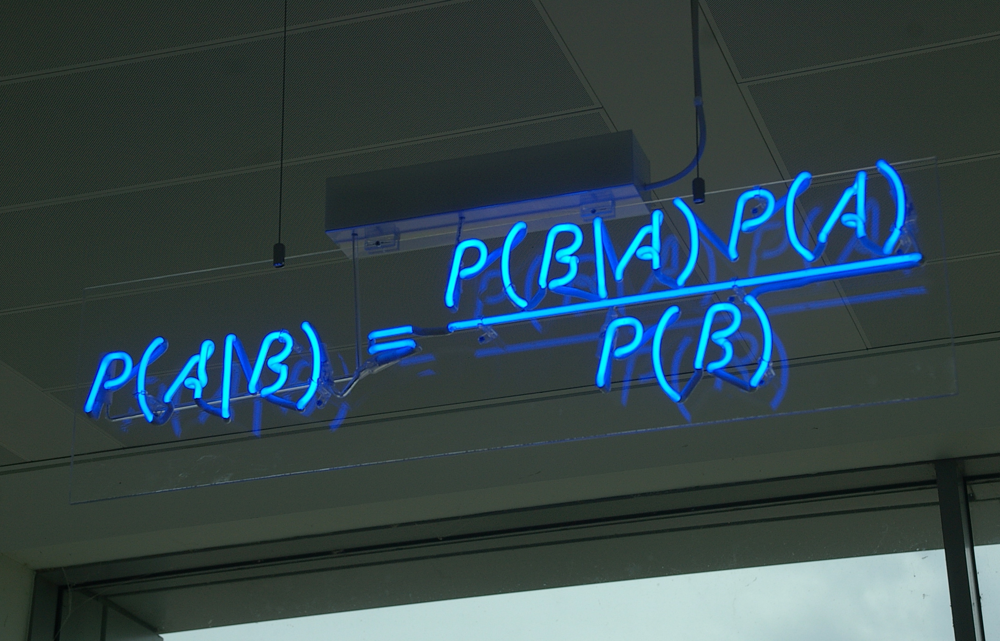
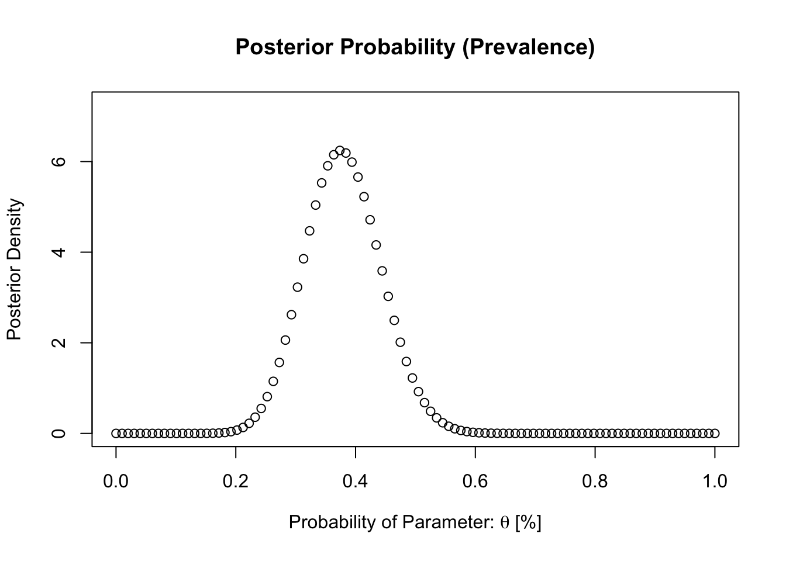
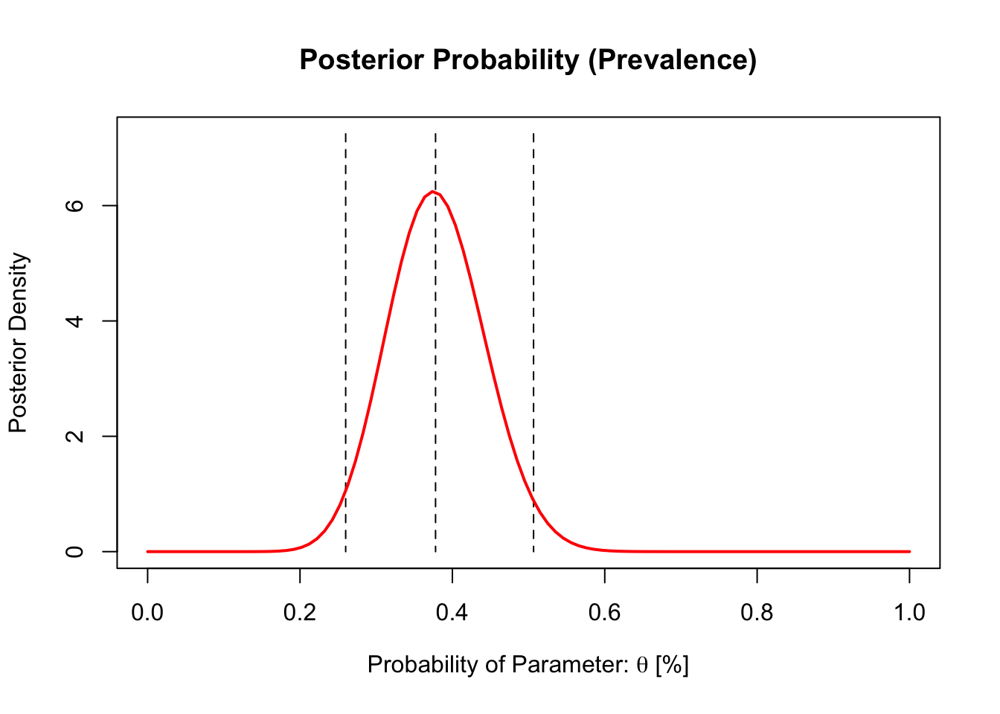

4 Introduction to Bayesian Statistics
Theme: It’s all about Bayes’ Rule

4.1 Introduction
This week’s practical session is a unique one. You will be introduced to Bayesian Statistics. It is a branch of statistics which is steeped in probabilities and its interpretation. The core of Bayesian Statistics is the Bayes’ Theorem (or Bayes’ Rule) which uses conditional probabilities to quantify uncertainty surrounding the occurrence of events. In order to understand Bayesian Statistics, one should know the basic probability theory and how the Bayes’ Rule works.
Let us begin.
4.2 Probability theory
In the lectures - we said that a probability is the language of uncertainty. It quantifies the uncertainty for a defined event which takes any value between 0 and 1, whereby an event with probabilities near zero implies an event to be very unlikely, and probabilities near one implies an event to be very likely.
The notation for probabilities are Pr( ) or Prob( ). We will be sticking with the notation for Pr( ),
A probability is always a function of some event \(E\) which has a set number of outcomes as well as the sample space (or - population size) which is the total number of all possible outcomes that can occur for that event \(E\)
We can write this and say Pr(\(E\)), which is read as “the probability that event \(E\) will occur”
There are three types of probabilities:
Unconditional (or marginal) probabilities: An unconditional probability (or marginal) is the chance (or likelihood) that a particular event (i.e., single) will occur without regards to external circumstances. For instance, we have a single event \(E\). We therefore say, Pr(\(E\)), where we divide the number of observed outcomes \(n\) from \(E\) by the total sample space \(N\). The formula for the unconditional probability \(E\) is \[Pr(E)= \frac{n}{N}\]
Joint probabilities: A joint probability deals with more than one event. When we have two events i.e., \(E_1\) and \(E_2\), we say it is the chance that these two events will occur simultaneously at the same point in time. The notation for this is Pr(\(E_1\) & \(E_2\)). The formula for joint probability of \(E_1\) and \(E_2\) is \[Pr(E_1 \& E_2) = \frac{Pr(E_1 \cap E_2)}{N}\]
Conditional probabilities: A conditional probability of an event \(E_1\) is the probability that \(E_1\) will occur given the knowledge that an event \(E_2\) has already occurred. The notation for representing conditional probabilities uses | symbol to represent something given, For instance, the probability of \(E_1\) given \(E_2\) is written as Pr(\(E_1\) | \(E_2\)). Formula for conditional probability of \(E_1\) given \(E_2\) is \[Pr(E_1 | E_2) = \frac{Pr(E_1 \cap E_2)}{Pr(E_2)}\]
4.2.1 Application: Long-term environmental exposure to soil arsenic & risk of metallic poisoning.
Probabilities are used extensively in epidemiology to estimate the risk of a disease due to an exposure. When we say risk of a disease it simply means a probability. In fact, its with probabilities where we get relative risks (RRs) and odds ratios (ORs). Here is a scenario in a 2-by-2 table set in the context of environmental epidemiology.
| Health Status | Poisoning | No Poisoning | Sum (row) |
|---|---|---|---|
| Exposed | 129 | 245 | 374 |
| Not Exposed | 171 | 332 | 503 |
| Sums (col) | 300 | 577 | 807 |
Health status of 807 residents in Cornwall, South West England, have been documented due to concentration levels of Arsenic in soil naturally exceeding the national UK safety limit (32 mg/kg). We can use the above data to compute the unconditional, joint and conditional probabilities for risk of metal toxicity.
First, let’s write the notation to avoid any confusion:
Let the health status “poisoning” represent “p”. Overall probability of poisoning is Pr(\(p\)). “No poisoning” is the complement of “p”, so let’s represent this as “p’”. Hence, overall probability of No poisoning is written as Pr(\(p'\))
The following represents those who are exposed “E”. Overall probability of being exposed is Pr(\(E\)). Likewise, not being exposed is the complement of “E”. We can represent this as “E’”. Hence, overall probability of Not exposed is written as Pr(\(E'\))
We insert the corresponding notation into table to avoid confusion i.e., Pr( )
| Health Status | Poisoning (\(p\)) | No Poisoning (\(p'\)) | Sum (row) |
|---|---|---|---|
| Exposed (\(E\)) | 129 [Pr(\(p \cap E\))] | 245 [Pr(\(p' \cap E\))] | 374 [Pr(\(E\))] |
| Not Exposed (\(E'\)) | 171 [Pr(\(p \cap E'\))] | 332 [Pr(\(p' \cap E'\))] | 503 [Pr(\(E'\))] |
| Sums (col) | 300 [Pr(\(p\))] | 577 [Pr(\(p'\))] | 807 [\(N\)] |
Unconditional probability for metallic poisoning: Let the health status “poisoning” represent “p”. We can compute the unconditional probability Pr(\(p\)) as \[Pr(p)= \frac{n}{N} = \frac{300}{807} = 0.3717\]
The above estimate for Pr(\(p\)) = 37.17%. This probability estimate is proportion and in epidemiology we refer to this as a ‘prevalence.’ Overall prevalence of metallic poisoning in Cornwall is 37.17%
What is the joint probability for those with the condition and at the same time exposed to elevated concentrations of soil arsenic? Here, let’s represent those exposed with the notation Pr(\(E\)). We can compute the joint probability accordingly:
\[Pr(p \& E) = \frac{Pr(p \cap E)}{N} = \frac{129}{807} = 0.1598\]
The above estimate for Pr(\(p \& E\)) = 15.98%. This is prevalence of metallic poisoning who are exposed.
What about the conditional probability i.e., the likelihood of having such chronic condition given that the person have been exposed? This can be computed accordingly as follows:
\[Pr(p | E) = \frac{Pr(p \cap E)}{Pr(E)} = \frac{(\frac{129}{807})}{(\frac{374}{807})} = 0.3449\]
The above estimate for Pr(\(p | E\)) = 34.49%. This is prevalence of metallic poisoning given being exposed.
TASK: Knowing what the types of probabilities untangles what the Bayes’ theorem formula. Try to compute the unconditional, joint and conditional probabilities from the disease data set below:
| Health Status | Diseased | Not Diseased | Sum (row) |
|---|---|---|---|
| Exposed | 5 | 10 | 15 |
| Not Exposed | 65 | 20 | 85 |
| Sums (col) | 70 | 30 | 100 |
Let’s create a data frame to get you started:
# Create data in a matrix
data <-matrix(c(5, 65, 70, 10, 20, 30, 15, 85, 100),nrow = 3, dimnames = list("Exposure" = c("Exposed", "Unexposed", "ColSum"), "Status" = c("Diseased", "Not Diseased", "RowSum")))
data## Status
## Exposure Diseased Not Diseased RowSum
## Exposed 5 10 15
## Unexposed 65 20 85
## ColSum 70 30 100# You can extract the values from the martix by typing
data[1]## [1] 5data[9]## [1] 100#etc4.3 Bayes’ Theorem
The Bayes’ theorem (or law) determines the conditional probability of a hypothesis (i.e., event) being true given the evidence (i.e., data). This allows us to express our belief in a particular hypothesis (\(H\)) or phenomenon, and how this believe should change after accounting for evidence (\(E\)) or data.
The Bayes’ formula is:
\[Pr(H | E) = \frac{Pr(E|H)\cdot Pr(H)}{Pr(E)}\] Description of each component: H is the hypothesis; Pr(\(H\)) is probability the hypothesis is true (before any evidence is present). This is the prior; Pr(\(E\)) is probability of observing the given hypothesis in light of the evidence; Pr(\(E|H\)) is the conditional probability of observing the data (i.e., evidence) given the hypothesis. Here, it indicates the compatibility between the data and hypothesis. This is our likelihood. Lastly, the Pr(\(H|E\)) is conditional probability i.e., what we want to know – the probability of a hypothesis given after we observed the data. This is the posterior probability.
The expanded from of the formula is
\[Pr(H | E) = \frac{Pr(E|H)\cdot Pr(H)}{Pr(E|H) \cdot Pr(H) + Pr(E|H') \cdot Pr(H')}\] Where,
\[Pr(E) = Pr(E|H) \cdot Pr(H) + Pr(E|H') \cdot Pr(H')\]
4.3.1 Applying Bayes’ Rule on the metallic poisoning data
We believe that there 3 in 10 risk are poisoning with long-term exposure to elevated concentrations of arsenic from topsoil in Devon. In a previous survey in Cornwall, the prevalence was 35%, granted that these findings are based on a similar setting with residents having similar exposure status. How probable would the risks be in Devon?
Prepare the model set-up:
- Prior: We hypotheses that there is 3 in 10 risk: \[Pr(H) = 3/10 = 0.3\]
- Likelihood: The prevalence is 35.0% after observing the data if hypothesis is true: \[Pr(E | H) = 0.35\]
- Complements: \[Pr(H’) = 1 – 0.3 = 0.7; Pr(E | H’) = 1 – 0.35 = 0.65\]
- Posterior: \[Pr(H | E) = \frac{Pr(E|H)\cdot Pr(H)}{Pr(E|H) \cdot Pr(H) + Pr(E|H') \cdot Pr(H')} = \frac{0.35\cdot 0.3}{0.35 \cdot 0.3 + 0.7 \cdot 0.65} = 0.1875 = 18.75%\]
We can keep updating this belief by simply re-inserting the value for the new prevalence in Pr(\(H\)) and computing its complement i.e., Pr(\(H'\)).
TASK: Let’s try to compute the conditional probability using the Bayes Rule with the example below. We suspect that the risk for contracting some disease is 3 in 15 although the prevalence for the disease could be as low as 20% with exposure to its associated risk factors. What is Pr(\(H|E\))?
4.4 Bayesian Inference with Probability Functions
Bayes’ Rule forms the crux of Bayesian inference. In this domain, we often rely on probability functions applied to the Bayes’ rule to conduct parameter estimation for our hypothesis with the given the data. This process is somewhat tricky because you will need to derive a model for predicting the posterior distribution. The formula from the Bayes’ Rule is the following: \[Pr(H | E) = \frac{Pr(E|H)\cdot Pr(H)}{Pr(E)} >> posterior \propto likelihood \cdot prior\]
As explained in the lecture, we simply remove the denominators (i.e., which is a constant term in this context) which, in turn, renders the relationship in the above equation to be proportional.With minimal information, it is possible to estimate a parameter through probabilistic modelling using this relation. Here, is an example.
4.4.1 Bayesian inference with Binomial-Beta distribution
Suppose, in a small survey, a random sample of 50 people from a large population at risk of arsenic poisoning due to environmental exposure status were selected. Each person’s disease status was recorded as either “Diseased” or “None”. 19 of the respondents have found to be diseased and assign a Beta distribution with Beta(3,5). It is possible to predict the disease burden through Bayesian inference.
Step 1: Let the proportion who are disease represent \(\theta\)
Step 2: Specify the model for the likelihood function. Here it is a Binomial function since we are dealing with proportions: \[\binom{50}{19}\theta^{19}(1-\theta)^{50-19}\]
Step 3: Specify the prior. Here, it’s the Beta distribution with \(\alpha\) = 3 and \(\beta\) = 5. Its form is \[k\theta^{3-1}(1-\theta)^{5-1}\]
Step 4: Compute the posterior distribution by multiplying the binomial and beta functions together. All constant terms not having \(\theta\) can be thrown away:
\[(\theta^{19}(1-\theta)^{50-19}) \times (\theta^{3-1}(1-\theta)^{5-1})\] \[\theta^{22-1}(1-\theta)^{36-1}\] As you can see the posterior distribution is a Beta distribution, with the parameters updated from the binomial model. When the posterior is in the same family as the prior, we say the prior is a conjugate for the model. Here, the Beta prior is a conjugate for the binomial model. We can use this to estimate our parameter with the following code:
# set all possible values for theta
theta <- seq(0, 1, length = 100)
# compute the prior using the beta[3,5]
prior <- dbeta(theta, 3, 5)
# compute the posterior sample from updated formula which becomes a conjugate
posterior <- dbeta(theta, 22, 36)
plot(theta,posterior, ylim = c(0, max(posterior)+1), main = "Posterior Probability (Prevalence)", ylab = "Posterior Density", xlab = expression(paste("Probability of Parameter: ", theta, " [%]")))
The mid-point of the posterior curve with the highest density is the posterior estimate we are looking for in predicting the disease burden, which is roughly 0.4. Let’s extract the estimate at 50% of this sample using the qbeta() function. We can also extract the point on 2.5% and 97.5% to report the 95% credible intervals, and let make sure that this estimate is reflected in the graphical output.
# estimate mean 50% and 95% CrI with qbeta()
Mean <- qbeta(0.5, 22, 36)
LB <- qbeta(0.025, 22, 36)
UB <- qbeta(0.975, 22, 36)
Mean## [1] 0.377914LB## [1] 0.2599547UB## [1] 0.506553plot(theta,posterior, ylim = c(0, max(posterior)+1), main = "Posterior Probability (Prevalence)", ylab = "Posterior Density", xlab = expression(paste("Probability of Parameter: ", theta, " [%]")), type="l")
segments(x0=Mean, y0=max(posterior)+1, x1=Mean, y1=0, lty = "dashed")
segments(x0=LB, y0=max(posterior)+1, x1=LB, y1=0, lty = "dashed")
segments(x0=UB, y0=max(posterior)+1, x1=UB, y1=0, lty = "dashed")
lines(theta,posterior, col="red", lwd=2)
INTERPRETATION: Combining this with the information from the binomial data, we get the posterior of Beta(\(\theta\), 22, 36). The above model’s estimated prevalence is 37.79% with uncertainty of 25.9% to 50.6%
TASK: Try to derive the posterior model for a likelihood function with Poisson distribution and a prior with a gamma distribution. Multiple the two distribution and see if a conjugate is derived.
Poisson Distribution: \[P(Y|\theta) = \frac{\theta^{y}}{y!} \cdot e^{-\theta}\]
Gamma Distribution: \[P(\theta) = k\theta^{\alpha-1}\cdot e^{-\beta \cdot \theta}\]